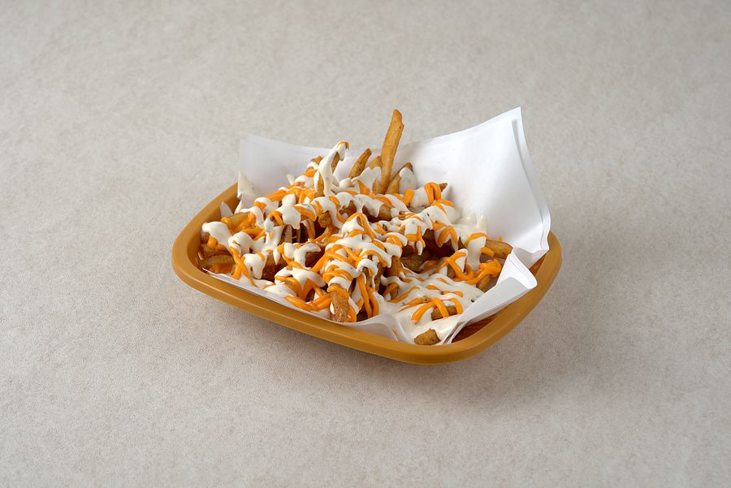

← 메뉴 전체 보기
치즈 프라이즈

케이준 감자튀김에 치즈·화이트·레드소스 세 가지 맛을 올렸습니다.
- 치즈 프라이즈4,500원
영양성분 (1인분)
| 치즈 프라이즈 | |
|---|---|
| 중량 | 120g |
| 열량 | 367kcal |
| 탄수화물 | 40.4g |
| 당류 | 3.0g |
| 단백질 | 4.2g |
| 지방 | 21.2g |
| 포화지방 | 4.0g |
| 트랜스지방 | 0.21g |
| 콜레스테롤 | 7.1mg |
| 나트륨 | 624.9mg |
매장 배합표와 국가표준식품성분표로 계산한 추정값입니다. 공인 기관 분석값은 아닙니다.
비슷한 식품 값으로 추정한 재료: 치즈소스
이 메뉴에 들어가는 재료의 원산지
| 재료 | 원산지 |
|---|---|
| 감자 | 인도 |
| 마요네즈 | 대한민국 |
| 요거트 | 대한민국 |
| 마늘 | 대한민국 |
| 케찹 | 대한민국 |
| 치즈소스 | 대한민국 |
| 스리라차 | 태국 |
| 칠리소스 | 인도 |
| 레몬즙 | 칠레 |